资料分析：综合分析题 核心错题 · 共 42 题
【题目编号/题号】 ZL005 (20-20)书本第 19 20 页
【考点标签】 综合分析；统计表
【材料】（无文本材料，见题干配图）
【题干】

根据上表，下列说法正确的是：
【选项】
A2017—2019年，全球医疗器械销售总额年均增长率大于6%
B2019年，牙科医疗器械销售额在全球医疗器械销售总额中的占比较耳鼻喉科高2.1个百分点
C与2017年相比，2019年糖尿病医疗器械销售额在全球医疗器械销售总额中的占比有所上升
D与2017年相比，2019年医疗器械销售额增长超过50亿美元的细分市场有4个
听课笔记 / 决策路径：
【题目编号/题号】 ZL007 (31-20)书本第 30 31 页
【考点标签】 综合分析；统计表
【材料】（无文本材料，见题干配图）
【题干】
关于2020年该行业销售、管理和财务费用，能够用上述资料中推出的是：
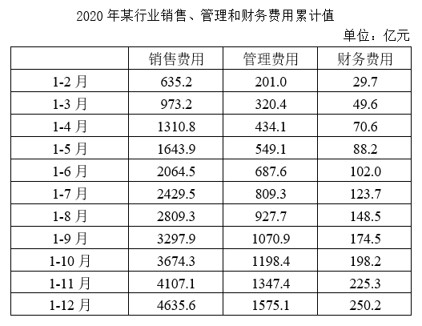
【选项】
A二季度销售费用低于一季度水平
B四季度每个月的销售费用都超过400亿元
C管理费用累计超过1000亿元是在第四季度
D二季度各月，财务费用逐月递减
听课笔记 / 决策路径：
【题目编号/题号】 ZL023 (63-20)书本第 62 63 页
【考点标签】 综合分析；统计图
【材料】（无文本材料，见题干配图）
【题干】
关于2012-2022年中国音乐著作权协会会员人数及许可收入状况，能够从上述资料中推出的是：
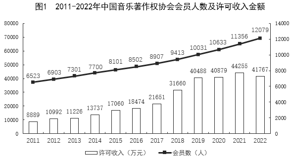
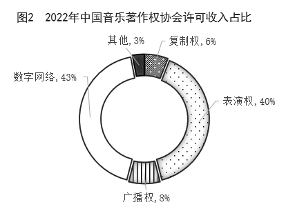
【选项】
A2022年，数字网络许可收入不到1.6亿元
B许可收入同比增量最大的年份，会员同比增长了600多人
C如每年均保持2022年同比增量，2026年会员数将超过1.5万人
D2016-2020年，许可总收入超过15亿元
听课笔记 / 决策路径：
【题目编号/题号】 ZL026 (72-5)书本第 71 72 页
【考点标签】 综合分析；统计图
【材料】（无文本材料，见题干配图）
【题干】
根据上图，下列说法不正确的是（ ）。
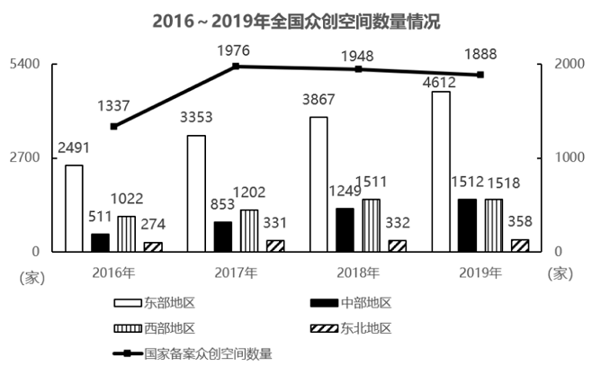
【选项】
A2016~2019年，东北地区众创空间数量占全国比重呈先升后降的趋势
B2019年国家备案众创空间数量是2016年的1.4倍多
C2017~2019年，全国众创空间数量同比增量逐年下降
D2017~2019年，东部地区众创空间数量同比增长最慢的年份是2018年
听课笔记 / 决策路径：
【题目编号/题号】 ZL032 (83-20)书本第 82 83 页
【考点标签】 综合分析；文字资料
【材料】
2023年前三季度，规模以上文化及相关产业企业（简称文化企业）实现营业收入91619亿元，同比增长 7.7%。其中，文化新业态特征较为明显的16个行业小类实现营业收入36870亿元，同比增长15.2%。 分产业类型看，文化制造业实现营业收入29007亿元，同比下降1.0%；文化批发和零售业15024亿元，同比 增长5.3%；文化服务业47588亿元，同比增长14.6%。 分领域看，文化核心领域实现营业收入59507亿元，同比增长12.4%；文化相关领域32112亿元，同比下降 0.1%。 分行业类别看，新闻信息服务实现营业收入12203亿元，同比增长14.9%；内容创作生产19857亿元，同比 增长10.3%；创意设计服务14973亿元，同比增长9.6%；文化传播渠道10712亿元，同比增长12.4%；文化投资运 营473亿元，同比增长27.7%；文化娱乐休闲服务1289亿元，同比增长67.2%；文化生产和中介服务10894亿元， 同比下降1.5%；文化装备生产4443亿元，同比下降4.3%；文化消费终端生产16775亿元，同比增长2.1%。 分区域看，东部地区实现营业收入71959亿元，同比增长8.1%；中部地区10600亿元，同比增长1.9%；西部 地区8196亿元，同比增长12.2%；东北地区864亿元，同比增长7.0%。前三季度，文化企业实现利润总额7508亿 元，同比增长31.4%。前三季度末，文化企业资产总计192849亿元，同比增长6.7%。
【题干】
下列说法错误的是：
【选项】
A2022年前三季度，文化新业态特征较为明显的16个行业小类的营业收入占文化企业营业收入比重超过40%
B2023年前三季度，文化核心领域实现营业收入同比增量超过文化企业实现营业收入同比增量
C2022年前三季度，中部地区文化企业实现营业收入比西部地区多3000亿元以上
D2023年前三季度，每百元资产实现营业收入比上一年高
听课笔记 / 决策路径：
【题目编号/题号】 ZL035 (86-10)书本第 85 86 页
【考点标签】 综合分析；文字资料
【材料】
2022年，全国软件和信息技术服务业规模以上企业超3.5万家，累计完成软件业务收入108126亿元，同比增 长11.2%，增速较上年同期回落6.5个百分点。 2022年，全国软件业利润总额12648亿元，同比增长5.7%，增速较上年同期回落1.9个百分点。软件业务出 口额524.1亿美元，同比增长3.0%，增速较上年同期回落5.8个百分点。其中，软件外包服务出口额同比增长 9.2%。 2022年，东部、中部、西部和东北地区分别完成软件业务收入88663亿元、5390亿元、11574亿元和2499亿 元，分别同比增长10.6%、16.9%、14.3%和8.7%。软件业务收入居前5名的北京、广东、江苏、山东、浙江共完 成收入74537亿元，占比较上年同期提高2.9个百分点。 2022年，全国15个副省级中心城市实现软件业务收入53419亿元，同比增长10.0%，增速较上年同期回落6.3 个百分点；实现利润总额6924亿元，同比增长2.4%，增速较上年同期回落2.1个百分点。
【题干】
以下信息中，能够从上述资料中推出的有几项？ ①2020年平均每个副省级中心城市软件业务收入 ②2021年北京、广东、江苏、山东、浙江软件业务收入之和 ③2022年软件外包服务出口额占软件业务出口额比重
【选项】
A0
B1
C2
D3 （十四）
听课笔记 / 决策路径：
【题目编号/题号】 ZL036 (91-10)书本第 90 91 页
【考点标签】 综合分析；文字资料
【材料】
2021年前三季度，上述企业实现营业收入84205亿 元，按可比口径计算，同比增长21.8%；两年平均增长10.0%。 分业态营业收入情况：文化新业态特征较为明显的16个行业小类28322亿元，同比增长26.1%；两年平均增 长24.0%，高于全部规模以上文化及相关产业企业14.0个百分点。 分行业类别营业收入情况：新闻信息服务9847亿元，同比增长22.1%；内容创作生产17693亿元，同比增长 18.6%；创意设计服务13787亿元，同比增长24.0%；文化传播渠道9309亿元，同比增长30.1%；文化投资运营 359亿元，同比增长13.8％；文化娱乐休闲服务916亿元，同比增长35.3％；文化辅助生产和中介服务11441亿 元，同比增长18.3％；文化装备生产4880亿元，同比增长17.8％；文化消费终端生产15974亿元，同比增长 22.0％。 分产业类型营业收入情况：文化制造业30950亿元，同比增长17.7％；文化批发和零售业13561亿元，同比 增长26.0％；文化服务业39693亿元，同比增长23.7％。 分领域营业收入情况：文化核心领域51911亿元，同比增长22.9％；文化相关领域32294亿元，同比增长 20.0％。 分区域营业收入情况：东部地区64715亿元，同比增长22.5％；中部地区11417亿元，同比增长19.7％；西 部地区7329亿元，同比增长19.0％；东北地区744亿元，同比增长20.2％。
【题干】
关于2020年前三季度，以下说法正确的是：
【选项】
A文化新业态特征较为明显的16个行业小类营业收入同比增速高于2021年同期
B内容创作生产营业收入超过15000亿元
C文化核心领域收入超过文化相关领域收入2倍
D东部地区与中部地区营业收入之比低于
听课笔记 / 决策路径：
【题目编号/题号】 ZL040 (98-14)书本第 96 97 98 页
【考点标签】 综合分析；文字资料
【材料】
2016年国产工业机器人销量继续增长，全年累计销售29144台，较上年增长16.8%，增速较上年提升。 从机械结构看，2016年国产多关节机器人销量首次超过万台，为11756台，增速已连续两年超过70%，占国 产工业机器人总销量的40.4%，比上年提高12.9个百分点。坐标机器人仍是国产工业机器人销量第一的机型， 2016年销售12830台，占销售总量的比重为44.0%，比上年回落3.5个百分点，连续两年占比回落。工厂用AGV机 器人销量超过2100台，同比增长23.9%。并联机器人销售增长8%。而SCARA机器人和圆柱坐标机器人的销售则 出现超过30%的下降。 从应用领域看，2016年搬运与上下料仍是国产工业机器人的首要应用领域，全年销售1.65万台，同比增长 22.0%，增速放缓，占国产工业机器人销售总量的56.6%；焊接和钎焊机器人销售0.51万台，同比增长36.3%； 装配与拆卸机器人销售0.37万台，同比增长129%。此外涂层与胶封机器人的销售也实现了32.9%的增长，特别 是其中的喷漆上釉机器人销量增长了138%，而洁净室机器人和加工机器人的销售量均出现了同比下降。 从应用行业看，3C行业和电气设备行业销量均超过5000台，分列第一第二位，特别是电气设备行业，同比 大幅增长3倍有余。汽车行业销量同比增长45.4%；非金属矿物制品业销量同比增长125%。此外，在家具、服 装、烟草等消费品制造行业的机器人消费量均翻番。
【题干】
下列指标中，2015、2016连续两年均实现增长的是： ①国产多关节机器人销量 ②搬运与上下料机器人销量 ③圆柱坐标机器人销量 ④并联机器人销量占总销量的比例
【选项】
A①②
B①③
C②④
D③④
听课笔记 / 决策路径：
【题目编号/题号】 ZL042 (104-15)书本第 103 104 页
【考点标签】 综合分析；文字资料
【材料】
2018年，某市实现地区生产总值24221.98亿元，比上年增长7.6%。其中，第一产业增加值22.09亿元，增长 3.9%；第二产业增加值9961.95亿元，增长9.3%；第三产业增加值14237.94亿元，增长6.4%。现代产业中，现代 服务业增加值10090.59亿元，增长7.1%；先进制造业增加值6564.83亿元，增长12.0%；高技术制造业增加值 6131.20亿元，增长13.3%。四大支柱产业中，金融业增加值3067.21亿元，增长3.6%；物流业增加值2541.58亿 元，增长9.4%；文化及相关产业（规模以上）增加值1560.52亿元，增长6.3%；高新技术产业增加值8296.63亿 元，增长12.7%。七大战略性新兴产业增加值合计9155.18亿元，比上年增长9.5%，占地区生产总值比重 37.8%。其中，新一代信息技术产业增加值4772.02亿元，增长10.9%；数字经济产业增加值1240.73亿元，增长 3.8%；高端装备制造产业增加值1065.82亿元，增长10.7%；绿色低碳产业增加值990.73亿元，增长11.7%；海洋 经济产业增加值421.69亿元，下降11.3%；新材料产业增加值365.61亿元，增长8.6%；生物医药产业增加值 298.58亿元，增长22.3%。 全市年末常住人口1302.66万人，其中常住户籍人口454.70万人，增长4.6%，占常住人口比重34.9%；常住 非户籍人口847.97万人，增长3.6%，占比重65.1%。年末城镇登记失业率为2.3 %。全年居民消费价格比上年上 涨2.8%。全年完成一般公共预算收入3538.41亿元，比上年增长6.2%。其中税收收入2899.60亿元，增长9.2%。 一般公共预算支出4282.54亿元，下降6.8%。
【题干】
根据上文，下列说法正确的是：
【选项】
A2018年，该市第二产业增加值占地区生产总值比重同比下降
B2017年，该市四大支柱产业中，物流业增加值最大
C2018年，该市年末城镇登记失业人口29.96万人
D2018年，该市一般公共预算收入中，非税收收入同比负增长
听课笔记 / 决策路径：
【题目编号/题号】 ZL046 (114-15)书本第 113 114 115 页
【考点标签】 综合分析；文字资料
【材料】
2019年3月31日，证券业协会对证券公司2019年第一季度经营数据进行了统计，131家证券公司当期实 现营业收入1018.94亿元，同比增长54.47%。 其中，各主营业务收入分别为代理买卖证券业务净收入（含席位租赁）221.49亿元，同比增长13.77%；证 券承销与保荐业务净收入66.73亿元，同比增长19.5%；财务顾问业务净收入20.95亿元，同比增长15.17%；投资 咨询业务净收入7.15亿元，同比增长5.15%；资产管理业务净收入57.33亿元，同比下降15.43%；证券投资收益 （含公允价值变动）514.05亿元，同比增长215.17%；利息净收入69.04亿元，同比增长4.94%；当期实现净利润 440.16亿元，同比增长86.83%；119家公司实现盈利，同比增长10.19%。 2019年第一季度，131家证券公司总资产为7.05万亿元，比上年一季度同期增加0.64万亿元；净资产为1.94 万亿元，比上年一季度同期增加0.05万亿元；净资本为1.62万亿元，比上年一季度同期增加0.02万亿元。 另外，2019年第一季度131家证券公司客户交易结算资金余额（含信用交易资金）1.50万亿元，比上年一季 度同期增加0.32万亿元；受托管理资金本金总额14.11万亿元，比上年一季度同期下降2.82万亿元。
【题干】
关于证券公司2019年第一季度经营数据，下列说法正确的是：
【选项】
A131家证券公司总资产比净资产少了4.11亿元
B131家证券公司财务顾问业务净收入的同比增长率为13.77%
C131家证券公司净资产的同比增长金额低于净资本的同比增长金额
D131家证券公司资产管理业务净收入占当期实现营业收入的比重约为5.6%
听课笔记 / 决策路径：
【题目编号/题号】 ZL048 (117-5)书本第 116 117 页
【考点标签】 综合分析；文字资料
【材料】
2018年，A省公共财政预算收入1180.07亿元，比上年增长10.7%。其中，一般公共预算收入103.82亿元，比 上年下降19.9%。全年A省实际完成地方税收收入104亿元，中央财政返还68.60亿元，增长1.2%。A省一般公共 预算支出从2012年的603.2亿元增加到2018年的958.41亿元，2018年同比增长8.9%。 2018年末，A省辖区各项存款余额3051.06亿元，同比增长4.4%。其中，个人存款1491.89亿元，增长 17.9%；单位存款1531.38亿元，下降7.6%；代理财政性存款25.38亿元，增长17.9倍。A省辖区各项贷款余额 2574.10亿元，同比增长9.4%。其中，个人贷款311.99亿元，下降2.6%；单位贷款2202.74亿元，增长10.8%；含 票据融资59.38亿元，增长32.9%。 2018年，农行A省分行年末各项本外币存款余额1300.85亿元，同比增长2.7%，比上年同期下降7个百分 点。其中，个人存款645.62亿元，增长8.4%；单位存款653.96亿元，下降1.9%；同业存款1.26亿元，下降 64.5%。年末各项贷款余额662.92亿元，同比增长0.7%，比上年同期下降19个百分点。其中，个人贷款103.52亿 元，增长6.0%；单位贷款484.65亿元，下降6.1%；贸易融资57.59亿元，增长30.8%；贴现及转贴现净值17.16亿 元，增长155.0倍。
【题干】
下列哪个指标不能从上述资料中推出？（ ）
【选项】
A2012年到2018年A省一般公共预算支出的平均增长率
B2017年农行A省分行年末各项本外币存款余额的同比增长量
C2016年农行A省分行年末各项贷款余额占A省辖区各项贷款余额的比重
D2017年A省个人贷款额和农行A省分行个人贷款额的比值
听课笔记 / 决策路径：
【题目编号/题号】 ZL052 (120-20)书本第 119 120 页
【考点标签】 综合分析；文字资料
【材料】
2021年1-2月，全国房地产开发投资13986亿元，同比增长3873亿元，房屋施工面积770629万平方米，同比 增长11.0%。其中，住宅542503万平方米，增长11.2%；办公楼31802万平方米，增长7.3%；商业营业用房76346 万平方米，增长2.5%；其他类型119978万平方米。房屋新开工面积17037万平方米，增长64.3%，其中，住宅 12736万平方米，增长68.5%。商品房销售面积17363万平方米，同比增长1.05倍，比2019年1-2月增长23.3%，商 品房销售额19151亿元，同比增长1.33倍，比2019年同期增长49.6%。 2月末，商品房待售面积比上年末增加2575万平方米，其中，住宅增加2314万平方米，办公楼和商业营业 用房分别减少24万平方米和269万平方米。 2021年1-2月，分地区看，东部地区房地产开发投资8353亿元，同比增长32.4%；中部地区2640亿元，增长 52.5%；西部地区2834亿元，增长45.1%；东北地区158亿元，增长28.6%。 东部地区商品房销售面积7565万平方米，同比增长113.9%；销售额11891亿元，增长148.1%，中部地区商 品房销售面积4369万平方米，增长104.3%；销售额3280亿元，增长130.2%，西部地区商品房销售面积5004万平 方米，增长95.1%；销售额3620亿元，增长103.6%，东北地区商品房销售面积425万平方米，增长82.0%；销售 额359亿元，增长72.7%。
【题干】
根据上文，下列说法正确的是（ ）。
【选项】
A2021年1-2月，全国房屋新开工面积同比增加超6800万平方米
B2021年2月末，商业营业用房待售面积同比减少量比办公楼多245万平方米
C2020年1-2月，房地产开发投资最低的地区，其投资额与最高的地区相差55倍
D2021年1-2月，分地区看，东北地区的商品房销售均价同比增长最小
听课笔记 / 决策路径：
【题目编号/题号】 ZL060 (128-10)书本第 127 128 页
【考点标签】 综合分析；文字资料
【材料】
2024年一季度，全国规模以上文化及相关产业企业（以下简称“文化企业”）实现营业收入31057亿元， 比上年同期增长8.5%；实现利润总额2116亿元；营业收入利润率（ ）为6.81%，同比下降0.17个 百分点。其中，文化新业态特征较为明显的16个行业小类实现营业收入12633亿元。增速快于全部规模以上文 化企业3.4个百分点。 分产业类型看，文化制造业实现营业收入9240亿元，比上年同期增长5.4%；文化批发和零售业5485亿元， 增长6.8%；文化服务业16331亿元，增长10.9%。 分领域看，文化核心领域实现营业收入20921亿元，比上年同期增长10.3%；文化相关领域实现营业收入 10136亿元。 分行业类别看，新闻信息服务实现营业收入4101亿元，比上年同期增长11.1%；内容创作生产7054亿元， 增长12.0%；创意设计服务5219亿元，增长10.4%；文化传播渠道4026亿元，增长6.8%：文化投资运营145亿 元，增长10.4%；文化娱乐休闲服务375亿元，增长10.5%；文化辅助生产和中介服务3583亿元，增长7.3%；文 化装备生产1378亿元，增长6.0%；文化消费终端生产5175亿元，增长2.7%。 分区域看，东部地区实现营业收入24759亿元，比上年同期增长9.2%；中部地区3491亿元，增长6.5%；西部 地区2524亿元，增长4.9%；东北地区282亿元，增长5.0%。
【题干】
在①2023年一季度全国规模以上文化企业实现利润总额、②2023年一季度文化新业态特征较为明显的16个行业小类实现营业收入、③2024年一季度文化相关领域实现营业收入同比增速这3项指标中，能够从上述资料中推出的有几项？
【选项】
A0
B1
C2
D3 （二十）
听课笔记 / 决策路径：
【题目编号/题号】 ZL062 (129-15)书本第 128 129 页
【考点标签】 综合分析；文字资料
【材料】
2023年全国著作权（包括作品著作权、计算机软件著作权、著作权质权）登记总量达8923901件，同比增 长40.46%，增速比上年同期增加39个百分点。根据各省、自治区、直辖市版权局和中国版权保护中心作品登记 信息统计，2023年全国共完成作品著作权登记6428277件，同比增长42.30%，登记量前五位的分别是：北京市 1101072件，同比增加53802件；山东省873826件，同比增加619459件；福建省710648件，同比增加424814件； 中国版权保护中心493070件，同比增加1476件；上海市412660件，同比增加30660件。从作品类型来看，登记 量最多的是美术作品3296437件，第二是摄影作品2501968件，第三是文字作品329128件，前三类作品类型登记 量占作品著作权登记总量的95.32%，该比例比上年同期增加4.86个百分点。 2023年全国共完成著作权质权登记411件，同比增长17.43%，涉及主债务金额995817.4万元，同比增长 82.82%；涉及担保金额985783.88万元，同比增长80.85%。其中计算机软件著作权质权登记361件，涉及主债务 金额917149.06万元，涉及担保金额907399.56万元；作品（除计算机软件之外）著作权质权登记50件，同比下 降26.47%，涉及主债务金额78668.34万元，同比下降55.13%，涉及担保金额78384.32万元，同比下降55.46%。
【题干】
不能从上述资料中推出的是：
【选项】
A2023年全国共完成计算机软件著作权登记2495213件
B2023年全国作品著作权登记总量同比增量超过200万件
C2023年计算机软件著作权质权登记在著作权质权登记中比重同比上升
D2023年平均每件作品（除计算机软件之外）著作权质权登记涉及主债务金额同比下降 2023年第14周，H市流感哨点监测医院（哨点医院）共报告流感样病例5187例，本周监测门诊就诊病人总数86749例，比上周增加5.76%，流感样病例的就诊比例（ILI%）为5.98%。
听课笔记 / 决策路径：
【题目编号/题号】 ZL066 (132-5)书本第 131 132 页
【考点标签】 综合分析；文字资料
【材料】
2022年，全国共有260家银行机构和29家理财公司累计新发理财产品2.94万只，同比下降38.23%，降幅比上 年同期扩大7.22个百分点；累计募集资金89.62万亿元，同比减少32.57万亿元。 截至2022年底，全国共有278家银行机构和29家理财公司有存续的理财产品，共存续产品3.47万只，同比下 降4.41%；存续规模27.65万亿元，同比下降4.66%。分机构类型来看，理财公司存续产品13947只，存续规模 22.24万亿元，同比增长29.36%。银行机构中，城商行存续产品9064只，存续规模2.45万亿元，同比下降 32.34%；农村金融机构存续产品7808只，存续规模1.09万亿元，同比下降2.63%；股份制银行存续产品1208只， 存续规模0.88万亿元，同比下降82.99%；大型银行存续产品668只，存续规模0.92万亿元，同比下降49.26%；其 他机构存续产品1980只，存续规模0.07万亿元，同比下降13.42%。 截至2022年底，持有理财产品的投资者数量为9671.27万个，较年初增长18.96%，其中机构投资者数量为 95.95万个，数量占比同比提升了0.22个百分点；在持有理财产品的个人投资者中，数量最多的是风险偏好为二 级（稳健型）的投资者，占比35.44%。
【题干】
能够从上述资料中推出的是：
【选项】
A2021年持有理财产品的个人投资者数量占比为98.88%
B2022年新发理财产品中平均每只产品募集资金低于2021年
C2022年城商行存续产品存续金额在银行机构存续产品中比例为8.85%
D2022年持有理财产品的个人投资者中风险偏好为二级的数量约为3393万个
听课笔记 / 决策路径：
【题目编号/题号】 ZL069 (133-10)书本第 132 133 134 页
【考点标签】 综合分析；文字资料
【材料】
哨点医院ILI%监测情况 本周哨点医院共报告流感样病例总数为5187例，比上周增加4.49%，比去年同期减少56.16%，其中国家级 哨点医院455例，比上周减少6.57%，比去年同期减少55.04%。城区哨点医院1899例，比上周减少19.40%，比去 年同期减少55.46%；郊区、县（市）哨点医院3288例，比上周增加26.07%，比去年同期减少56.55%。本周全市 哨点医院ILI%为5.98%，比上周低0.07个百分点，其中国家级哨点医院ILI%为2.12%，比上周高0.23个百分点。 城区哨点医院ILI%为4.45%，比上周低0.56个百分点；郊区、县（市）哨点医院ILI%为7.46%，比上周高0.01个 百分点。 （二）哨点医院ILI%纵向比较 2023年第14周全市哨点医院ILI%为5.98%，比2022年同期低7.56个百分点，比2021年同期低0.66个百分点， 其中国家级哨点医院ILI%为2.12%，比2022年同期低3.36个百分点，比2021年同期低4.67个百分点。城区哨点医 院ILI%为4.45%，比2022年同期低6.81个百分点，比2021年同期低2.08个百分点；郊区、县（市）哨点医院ILI% 为7.46%，比2022年同期低7.82个百分点，比2021年同期高0.54个百分点。 （三）各年龄组流感样病例构成情况 2023年第14周各年龄组报告的流感样病例构成情况为：0~4岁组1472例，5~14岁组1103例，15~24岁组406 例，25~59岁组1266例，60岁以上组940例。
【题干】
能够从上述材料中推出的是：
【选项】
A从2021年到2023年，H市第14周哨点医院ILI%逐年上升
B2023年第14周，H市哨点医院报告流感样病例同比减少超过6000例
C2023年第13周，H市国家级哨点医院报告流感样病例占全市比例超过10%
D2023年第14周H市哨点医院报告流感样病例中，占比低于20%的年龄组有3个
听课笔记 / 决策路径：
【题目编号/题号】 ZL072 (135-15)书本第 134 135 页
【考点标签】 综合分析；文字资料
【材料】
2019年A市专利密集型产业实现增加值6918.8亿元，比上年增长9.6%，分别高于战略性新兴产业、高技术 产业增加值增速2.3个和1.7个百分点；专利密集型产业增加值占GDP的比重为19.5%，比上年提高0.4个百分点。 2019年专利密集型产业发明专利申请量占专利申请总量的比重为66%，比规模以上重点企业高5.1个百分 点。专利密集型产业每亿元R&D经费产生的发明专利申请量为73.1件，比规模以上重点企业高3.6件；企业户均 拥有有效发明专利15.6件，是规模以上重点企业的2.2倍。从成果转化看，已被成功实施的发明专利数为5.2万 件，占有效发明专利数的58.4%。 在专利密集型产业中，2019年信息通信技术服务业实现营业收入10198.5亿元，增速达41.3%；实现利润 197.6亿元，比上年增长1倍；单位企业实现营业收入12亿元，是专利密集型产业平均水平的3.3倍。 在专利密集型产业中，2019年医药医疗产业营业收入、利润分别增长13.7%和5%；收入利润率达到17%， 高于专利密集型产业平均水平4.1个百分点；单位企业营业收入、利润分别为4.5亿元和0.76亿元。
【题干】
关于A市专利密集型产业发展状况，能够从上述资料中推出的是：
【选项】
A2018年增加值占全市GDP比重为19.9%
B2019年发明专利申请量比非发明专利申请量高一倍以上
C2018年信息通信技术服务业实现利润超过100亿元
D2019年医药医疗产业利润占营业收入的比重低于上年水平
听课笔记 / 决策路径：
【题目编号/题号】 ZL077 (138-10)书本第 137 138 页
【考点标签】 综合分析；文字资料
【材料】
2022年1~7月，全国规模以上工业发电4.77万亿千瓦时，同比增长1.4%，增速比上半年加快0.7个百分点。7 月份，全国发电量8059亿千瓦时，同比增长4.5%，增速比上月加快3.0个百分点。分品种看，7月份火电由降转 增，同比增长5.3%；由于来水偏枯，水电同比增长2.4%，增速比上月放缓26.6个百分点；风电同比增长5.7%， 增速比上月放缓11.0个百分点；核电同比下降3.3%，降幅比上月收窄5.7个百分点；太阳能发电同比增长 13.0%，增速比上月加快3.1个百分点。 2022年1~7月，全社会用电量累计49303亿千瓦时，同比增长3.4%。分产业看，第一产业用电量634亿千瓦 时，同比增长11.1%；第二产业用电量32552亿千瓦时，同比增长1.1%；第三产业用电量8531亿千瓦时，同比增 长4.6%；城乡居民生活用电量7586亿千瓦时，同比增长12.5%。7月份，全社会用电量8324亿千瓦时，同比增长 6.3%。分产业看，第一产业用电量121亿千瓦时，同比增长14.3%；第二产业用电量5132亿千瓦时，同比下降 0.1%；第三产业用电量1591亿千瓦时，同比增长11.5%；城乡居民生活用电量1480亿千瓦时，同比增长26.8%。
【题干】
能够从上述资料中推出的是：
【选项】
A2022年7月全国太阳能发电增长量最大
B2022年6月全国核电发电量比5月份高
C2022年7月第二产业用电量高于上半年第二产业月均用电量
D2021年7月第一产业用电量低于2021年上半年第一产业月均用电量
听课笔记 / 决策路径：
【题目编号/题号】 ZL079 (139-15)书本第 138 139 页
【考点标签】 综合分析；文字资料
【材料】
2016年全国女性就业人员占全社会就业人员的比重为43.1%，其中城镇单位女性就业人员6518万人，比 2010年增加1656万人。 2016年公有制企事业单位中女性专业技术人员1480万人，比2010年增加211万人，所占比重达47.8%，提高 2.8个百分点；其中女性高级专业技术人员161万人，比2010年增加59.3万人，所占比重38.3%，提高3个百分 点。 2016年企业董事会中女职工董事占职工董事的比重为39.9%，企业监事会中女职工监事占职工监事的比重 为40.1%，比2010年分别提高7.2和4.9个百分点；企业职工代表大会中女性代表比重为28.7%，略低于2010年0.3 个百分点。 2016年女性参加生育保险的人数达8020万人，比2010年增长49%。2016年，参加城镇职工基本医疗保险的 女性1.4亿人，比2011年增长21.5%；参加城镇居民基本医疗保险的女性1.9亿人，比2011年增长了1.5倍。 2016年全国参加城镇职工基本养老保险人数3.8亿人，其中女性1.8亿人，占比比2010年提高3个百分点； 2016年，参加城乡居民基本养老保险人数5.1亿人，其中女性超过1.7亿人。 2016年全国参加失业保险的人数超过1.8亿人，其中女性7551万人，分别比2010年增加4713万人和2402万 人，增长约35%和47%；参加工伤保险人数2.2亿人，其中女性8129万人，分别比2010年增加5728万人和2429万 人，增长约35%和43%。
【题干】
能够从上述资料中推出的是：
【选项】
A2016年全国参加工伤保险的人中，女性占比低于2010年水平
B2010年全国参加城镇职工基本养老保险的人中，女性占比低于40%
C2010年女职工董事占职工董事的比重高于女职工监事占职工监事的比重
D2010年公有制企业事业单位中男性高级专业技术人员不到210万人
听课笔记 / 决策路径：
【题目编号/题号】 ZL081 (141-5)书本第 140 141 142 页
【考点标签】 综合分析；文字资料
【材料】
2020年，我国规模以上互联网和相关服务企业（以下简称互联网企业）业务收入12838亿元，同比增长 12.5%，增速低于上年同期8.9个百分点。 2020年，互联网企业实现营业利润1187亿元，同比增长13.2%，增速低于上年同期3.7个百分点；得益于成 本控制较好，营业成本仅增长2.4%，行业营业利润高出同期收入增速0.7个百分点。 2020年，互联网企业信息服务收入共7068亿元，同比增长11.5%，增速低于上年同期11.2个百分点。互联网 接入及相关服务收入447.5亿元，同比增长11.5%，增速低于上年同期20.8个百分点；互联网数据服务（包括云 服务、大数据服务等）收入199.8亿元，同比增长29.5%，增速较上年同期提高3.9个百分点。 2020年，东部地区互联网业务收入11227亿元，同比增长14.8%，增速较上年同期回落9个百分点，中部地 区互联网业务收入448.1亿元，同比增长3.4%，增速较上年同期回落53.1个百分点。西部地区互联网业务收入 497.2亿元，同比增长6.9%，增速较上年同期回落15.2个百分点。东北地区互联网业务收入47.1亿元，同比增长 9.1%。 2020年，互联网业务累计收入居前5名的广东（增长5.2%）、北京（增长21.5%）、上海（增长20.9%）、 浙江（增长24.4%）和江苏（增长8.0%）共完成互联网业务收入10706亿元，同比增长15.1%，增速超过全国平 均水平2.6个百分点，占全国（扣除跨地区企业）比重达87.6%，占比较上年同期提高0.8个百分点。
【题干】
关于我国互联网企业业务状况，能够从上述资料中推出的有几条？ ①2019年实现利润超过1000亿元 ②2020年，互联网数据服务收入比2018年增长了不到70% ③2018年及2019年，中部地区互联网业务收入均低于西部地区
【选项】
A0
B1
C2
D3 （七）
听课笔记 / 决策路径：
【题目编号/题号】 ZL090 (148-10)书本第 147 148 页
【考点标签】 综合分析；文字资料
【材料】
2020年1-2月，我国境内投资者共对全球147个国家和地区的1733家境外企业进行了非金融类直接投资，累 计实现投资1078.6亿元人民币，同比增长1.8%。对外承包工程完成营业额1080亿元人民币，同比下降9.5%，新 签合同额2150.3亿元人民币，同比增长38.3%。对外劳务合作派出各类劳务人员3.9万人，同比减少2.9万人，2月 末在外各类劳务人员77.8万人。 2020年1-2月，我国对外投资合作主要呈现以下特点： 一是对“一带一路”投资合作增幅较大。2020年1-2月，我国企业对“一带一路”沿线的48个国家有新增 投资，合计27.2亿美元，同比增长18.3%。在“一带一路”沿线的59个国家新签对外承包工程合同额153.6亿美 元，同比增长25.6%，完成营业额91.4亿美元。 二是对外投资结构持续多元。2020年1-2月，对外投资主要流向租赁和商务服务业、批发和零售业、制造 业和采矿业等传统投资领域，占对境外企业非金融类直接投资的比重分别为40.8%、15.1%、11.3%和8.9%。其 中流向租赁和商务服务业的投资额同比增长43.2%，成为增速最高的领域。 三是对外承包工程新签大项目增多。2020年1-2月，对外承包工程新签合同额在5000万美元以上的项目有 115个，较去年同期增加29个，占新签合同总额的83.9%。
【题干】
能够从上述资料中推出的是：
【选项】
A2019年1-2月，我国境内投资者对境外企业非金融类直接投资额高于对外承包工程完成营业额
B2019年1-2月，我国对外劳务合作月均派出各类劳务人员不到1万人
C2020年1-2月，我国企业有新增投资的“一带一路”沿线国家中，我国企业平均对每个国家的新增投资额超过0.6亿美元
D2020年1-2月，我国企业在“一带一路”沿线国家新签对外承包工程合同额同比增量超过30亿美元
听课笔记 / 决策路径：
【题目编号/题号】 ZL096 (158-20)书本第 156 157 158 页
【考点标签】 综合分析；综合资料
【材料】
2022年1月1日《中华人民共和国法律援助法》施行以来，我国法律援助覆盖面不断扩大、服务水平显著 提升。据统计，2022年全国法律援助机构共组织办理法律援助案件137万余件，值班律师提供法律帮助95万余 件，为1980万余人次提供法律咨询，提供法律咨询人次同比增加约5%。 2022年，G省法律援助机构共组织办理法律援助案件（以下简称G省法律援助案件）195779件，较2021年减 少40937件，同比下降17.29%，其中刑事案件133509件（含值班律师法律帮助案件65647件），民事案件61754 件，行政案件516件。帮助受援群众212993人。
【题干】
根据资料，下列说法正确的是（ ）。
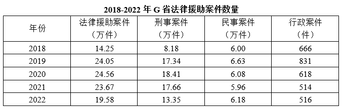
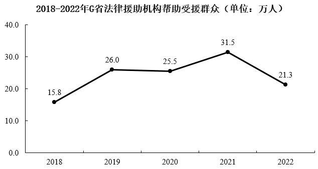
【选项】
A2021年，全国法律援助机构提供法律咨询超1900万人次
B2022年，值班律师法律帮助案件在G省法律援助刑事案件中的占比超50%
C2022年，全国法律援助机构值班律师提供法律帮助超100万件
D2018-2022年，G省法律援助机构累计帮助受援群众超110万人
听课笔记 / 决策路径：
【题目编号/题号】 ZL109 (184-20)书本第 182 183 184 页
【考点标签】 综合分析；综合资料
【材料】
2018年间，科学研究和技术服务业是法人单位数年均增速最快的行业 2024年我国LNG进口量为7761万吨，同比增长8.1%。
【题干】
能够从上述资料中推出的是：
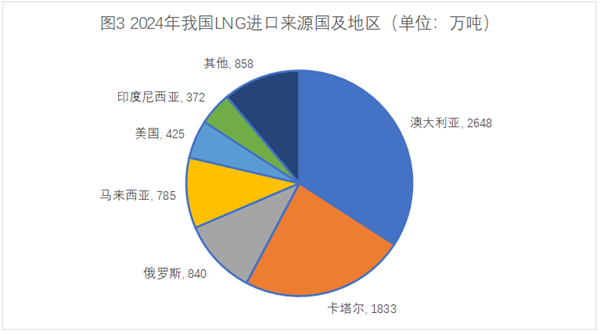
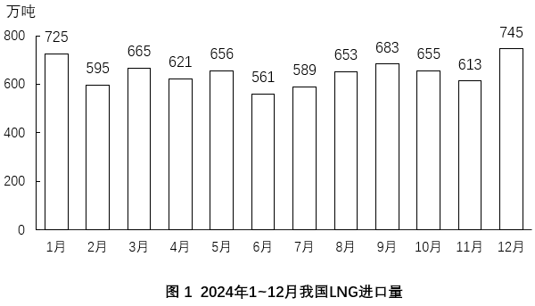
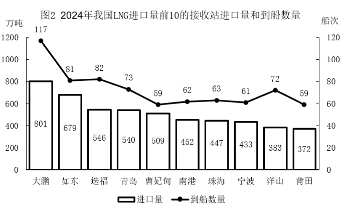
【选项】
A2024年，我国LNG累计进口量在9月第一次超过5000万吨
B2024年下半年，我国LNG进口量环比增速超过10%的月份仅有1个
C2024年，我国LNG进口量前5的接收站月均合计到港超过35船次
D2024年，我国自澳大利亚LNG进口量不到自马来西亚进口量的3.5倍
听课笔记 / 决策路径：
【题目编号/题号】 ZL112 (189-15)书本第 188 189 页
【考点标签】 综合分析；综合资料
【材料】
2020年，我国平均每个国际重要湿地面积同比增幅最大的年份是2020年
【题干】
根据以上材料可以推出的是：
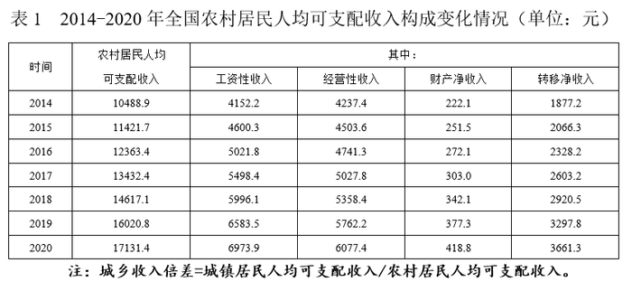
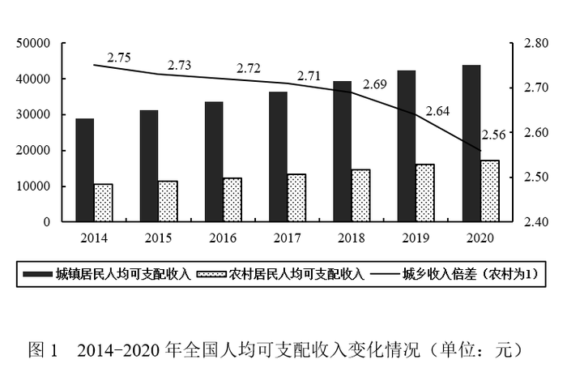
【选项】
A2020年全国居民人均可支配收入约为30493.9元
B2015-2020年农村居民人均可支配收入增速持续上升
C2014-2020年工资性收入占农村居民可支配收入的比重始终最高
D2014年农民经营性收入小于同时期城镇居民可支配收入的20%
听课笔记 / 决策路径：
【题目编号/题号】 ZL116 (193-10)书本第 192 193 页
【考点标签】 综合分析；综合资料
【材料】
2019年全球太空经济规模增至3660亿美元，较2018年增长1.7%，其中全球卫星产业收入为2707亿美元。在 全球卫星产业收入中，卫星制造业的收入为125亿美元，较上年减少70亿美元；卫星发射服务业的收入为49亿 美元，较上年下降21.0%；卫星通信服务业的收入为1230亿美元，较上年减少35亿美元；地面设备制造业的收 入为1303亿美元，较上年增长4.1%。
【题干】
关于2019年全球卫星产业，能够从上述资料中推出的是：
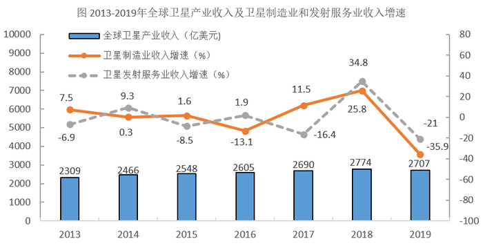
【选项】
A卫星产业收入增速为-2.4%
B卫星发射服务业收入比2017年提高13.8个百分点
C卫星产业收入占全球太空经济的比重同比上升3.0个百分点
D卫星通信服务业收入的同比增加额与地面设备制造业相差16亿美元
听课笔记 / 决策路径：
【题目编号/题号】 ZL118 (195-20)书本第 194 195 页
【考点标签】 综合分析；综合资料
【材料】
2021年上半年，湖北省规模以上信息传输、软件和信息技术服务业（以下简称“规上信息软件业”）保持 较快增长，推动全省规上服务业稳步发展。 2021年上半年，湖北省676家规上信息软件业企业中营业收入前20的企业共实现营业收入355.46亿元，同比 增长8.3%，拉动规上服务业营业收入增长1.1个百分点。
【题干】
下列说法不正确的是：
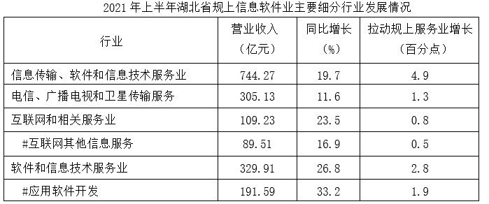
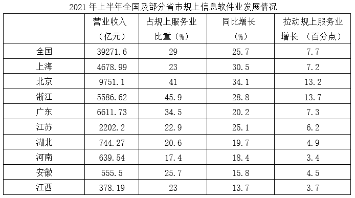
【选项】
A2021年上半年，北京规上服务业营业收入占全国的比例比上海多5%以内
B2020年上半年，江苏、湖北、河南、安徽、江西五省规上信息软件业企业营业收入之和比上海低
C2021年上半年湖北比河南规上信息软件业营业收入多，规上服务业营业收入少
D2020年上半年湖北省规上信息软件业企业中营业收入前20的企业总营业收入，与2021年上半年湖北省规上信息软件业中软件和信息技术服务业营业收入的差在5亿元以内
听课笔记 / 决策路径：
【题目编号/题号】 ZL120 (197-5)书本第 196 197 页
【考点标签】 综合分析；综合资料
【材料】（无文本材料，见题干配图）
【题干】
能够从上述资料中推出的有： ①2017年职工医保在职退休比高于2016年 ②2020年居民医保参保人数比上年略有增加 ③2012—2020年间，职工医保参保人数持续增加 ④2012—2020年间，居民医保基金支出增长金额最快的是2017年
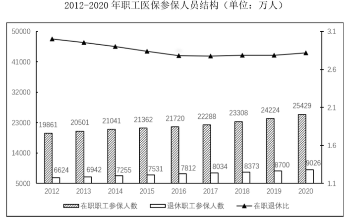
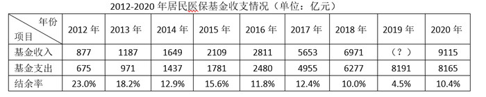
【选项】
A1
B2
C3
D4
听课笔记 / 决策路径：
【题目编号/题号】 ZL124 (201-20)书本第 200 201 页
【考点标签】 综合分析；综合资料
【材料】
2020年1~12月，中国新能源汽车市场共计72家动力电池企业实现装车配套，其中排名前3家、前5家、前10 家的企业动力电池装车量分别占总装车量的71.3%、82.1%和91.8%。
【题干】
据所给资料推断，下列表述正确的是（ ）。
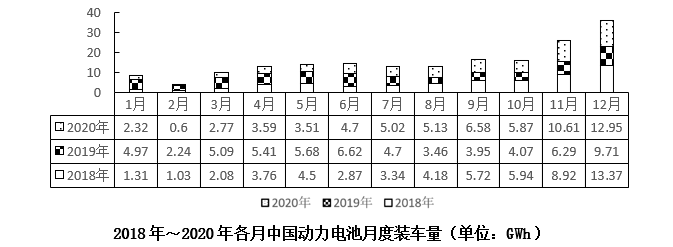
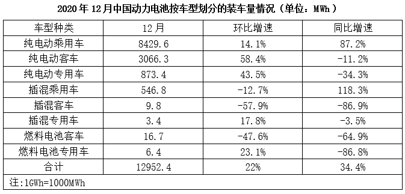
【选项】
A2020年下半年，我国动力电池装车量月平均增长约1.3GWh
B2018～2020年各年中，我国动力电池的装车量都是逐季度递增
C2020年12月我国动力电池装车量同比递增主要归功于插混乘用车
D2020年12月我国动力电池装车量中纯电动车电池装车量占比超95%
听课笔记 / 决策路径：
【题目编号/题号】 ZL129 (215-5)书本第 214 215 页
【考点标签】 综合分析；综合资料
【材料】
2021年1-2月，全国进口天然气2080万吨，同比增长17.4%。中国天然气进口金额为7312.1百万美元，同比 增长3.8%。
【题干】
不能从上述资料中推出的是：
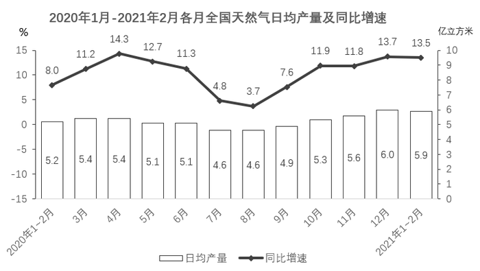
【选项】
A2020年四季度，全国天然气产量比三季度增长了10%以上
B2019年1～2月，全国天然气日均产量超过5亿立方米
C2021年1～2月，全国天然气进口金额同比增长额超过200百万美元
D2020年二、三、四季度，全国天然气日均产量同比增速低于上月的月份超过一半
听课笔记 / 决策路径：
【题目编号/题号】 ZL132 (218-15)书本第 217 218 页
【考点标签】 综合分析；综合资料
【材料】（无文本材料，见题干配图）
【题干】
能够从上述资料中推出的是：
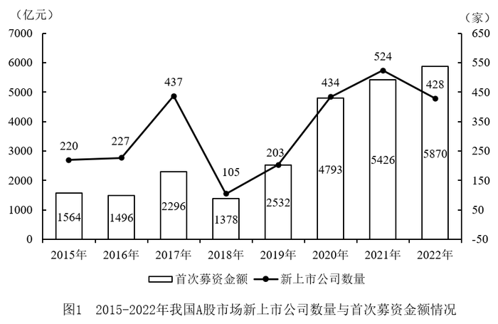
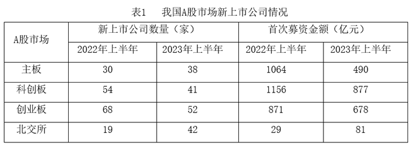
【选项】
A2022年下半年，我国A股市场新上市公司首次募资总金额高于2022年上半年
B2022年下半年，我国A股市场新上市公司平均每家首次募资金额约为10.7亿元
C2016-2022年期间，我国A股市场新上市公司数量增长率最大的年份出现在2019年
D2023年上半年，我国A股市场新上市公司数量与首次募资金额都小于2022年上半年
听课笔记 / 决策路径：
【题目编号/题号】 ZL137 (229-5)书本第 228 229 页
【考点标签】 综合分析；综合资料
【材料】（无文本材料，见题干配图）
【题干】
下列不能从上述资料中推出的是（ ）。
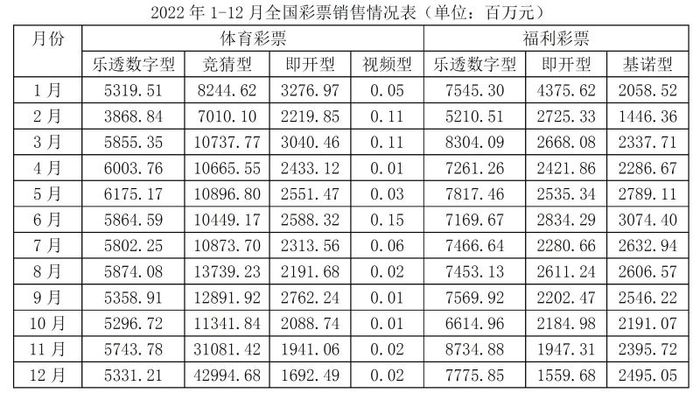
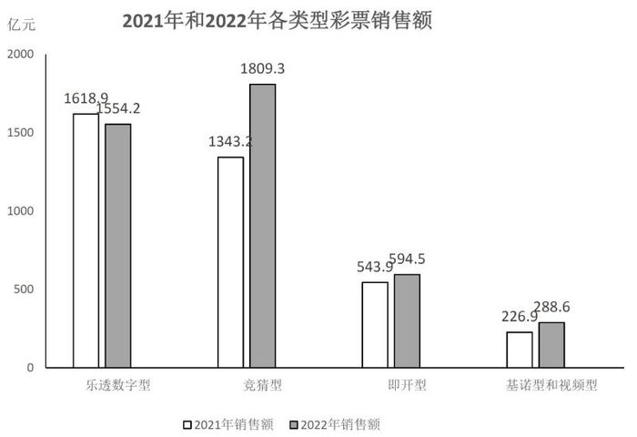
【选项】
A2022年下半年，每月的体育彩票销售额均大于福利彩票销售额
B2022年，基诺型和视频型彩票销售额占彩票销售额的比重较上一年低
C2022年，竞猜型彩票的月销售额高于年内月平均销售额的月份只有2个
D2022年，全国彩票销售总额同比增加500亿元以上
听课笔记 / 决策路径：
【题目编号/题号】 ZL153 (246-20)书本第 245 246 页
【考点标签】 综合分析；综合资料
【材料】
2019年，我国电信业务收入累计完成金额1.31万亿元，固定通信业务收入完成4161亿元，同比增长9.5%， 在电信业务收入中所占比重较上年提高2.6个百分点；移动通信业务实现收入8942亿元，同比减少2.9%。 2014~2019年，全国移动电话4G及非4G基站数变化情况如下图所示：
【题干】
能够从上述资料中推出的是：
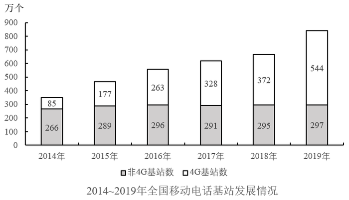
【选项】
A2019年移动通信业务收入占电信业务收入的比重同比下降了2.9个百分点
B2019年固定通信业务收入同比增长了400多亿元
C2015~2019年间，非4G基站数量逐年递增
D2015~2019年间，4G基站数同比增速和增量最大的年份不是同一个
听课笔记 / 决策路径：
【题目编号/题号】 ZL159 (252-20)书本第 251 252 页
【考点标签】 综合分析；综合资料
【材料】（无文本材料，见题干配图）
【题干】


能够从上述资料推出的是：
【选项】
A2022年全国每个体育场地平均面积大于900平方米
B2022年足球、篮球、排球场地数量之和少于体育健身场地数量
C2022年全国体育场地数量同比增速比2021年提高了2个百分点
D2022年全国主要分项体育场地数量占全国体育场地数量的95%以上
听课笔记 / 决策路径：
【题目编号/题号】 ZL162 (255-10)书本第 254 255 页
【考点标签】 综合分析；综合资料
【材料】
2022年，我国废钢铁、废有色金属等十个品种（详见表格）再生资源回收总重量约为37067.7万吨，同比下 降2.62%，回收总金额约为13140.6亿元，同比下降4.05%。2022年废有色金属中废铅回收重量同比增长5.56%。 2022年我国报废机动车回收数量399.1万辆，同比增长32.9%，回收数量占我国机动车保有量的9.57‰。
【题干】
能够从上述资料中推出的是：
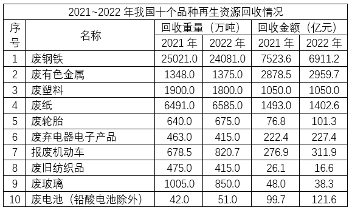
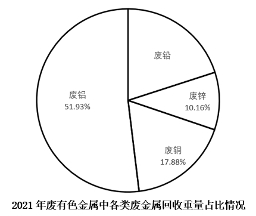
【选项】
A截止2022年底，我国机动车保有量约为4170万辆
B2022年我国十个品种再生资源平均回收价格最高的是废有色金属
C2021年回收金额排前两名的再生资源回收金额之和的比值超过75%
D2022年除废铅以外的废有色金属回收重量总和比2021年的有所下降
听课笔记 / 决策路径：
【题目编号/题号】 ZL165 (257-15)书本第 256 257 页
【考点标签】 综合分析；综合资料
【材料】
其中，机床工具商品进口105.2亿 美元，同比增长23.7%；出口137.4亿美元，同比增长40.8%。 从进口来源来看，2021年1～9月进口来源前三位分别是：日本34.5亿美元，同比增长37.8%；德国 22.2亿美 元，同比增长11.0%；中国台湾14.3亿美元，同比增长36.1%。 从出口去向来看，2021年1～9月出口去向前三位分别是：美国17.5亿美元，同比增长27.4%；越南10.5亿美 元，同比增长35.4%；印度8.8亿美元，同比增长67.8%。
【题干】
能够从上述资料中推出的是：
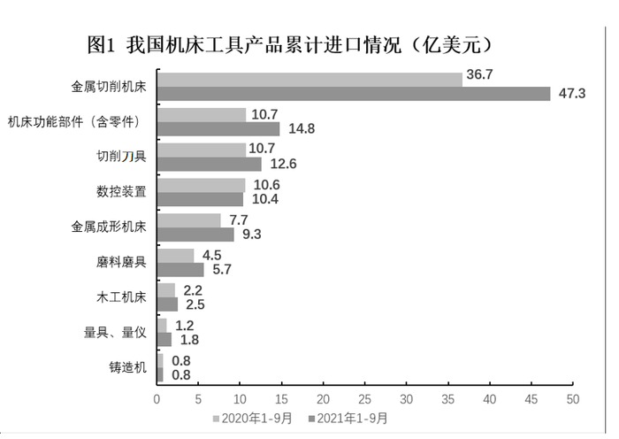
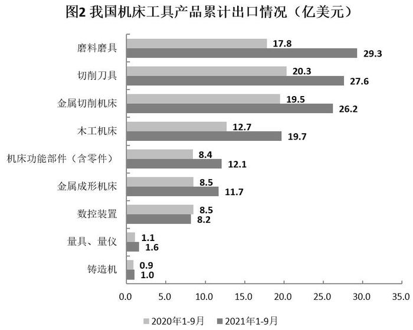
【选项】
A2021年1～9月，我国机床工具自日本进口同比增量是德国增量的5倍多
B2021年1～9月，进口额同比增速最高的机床工具产品类型是金属切削机床
C2021年1～9月，进出口总额超过30亿美元的机床工具产品有3种
D2020年1～9月，我国机床工具对印度出口额不到5亿美元
听课笔记 / 决策路径：
【题目编号/题号】 ZL167 (260-5)书本第 259 260 页
【考点标签】 综合分析；综合资料
【材料】
据国家统计局数据显示，2021年我国研究与试验发展（R&D）经费支出27864亿元，同比增长14.2%，占国 内生产总值之比为2.44%，其中基础研究经费1696亿元。国家自然科学基金共资助4.87万个项目。2021年全年授 予专利权460.1万件，同比增长26.4%；PCT专利申请受理量7.3万件。截至2021年末，有效专利1542.1万件，其 中境内有效发明专利270.4万件。每万人口高价值发明专利拥有量7.5件。全年商标注册773.9万件，同比增长 34.3%。全年共签订技术合同67万项，技术合同成交金额37294亿元，同比增长32.0%。
【题干】
下列说法正确的是：
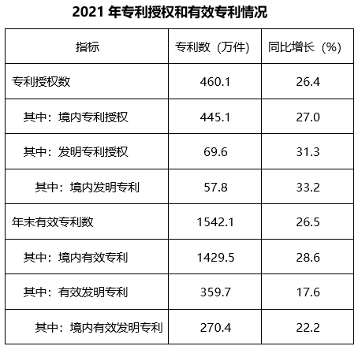
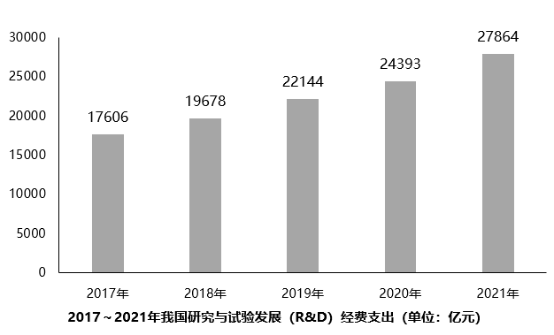
【选项】
A2021年，我国基础研究经费占R&D经费的比重不到5%
B2021年，全国有效专利中有效发明专利不到20%
C2021年，专利授权数比上一年增加不超过100万件
D2021年，我国技术合同成交金额比上一年增加超过万亿元
听课笔记 / 决策路径：
【题目编号/题号】 ZL168 (261-10)书本第 260 261 页
【考点标签】 综合分析；综合资料
【材料】
2018年第一季度，共有9586家星级饭店通过省级旅游主管部门审核，全国星级饭店第一季度的营业收入为 487.11亿元，同比增长2.43%。餐饮收入为208.24亿元，客房收入为209.12亿元。 第一季度全国50个重点旅游城市共有3636家星级饭店通过省级旅游主管部门数据审核，第一季度全国50个 重点旅游城市星级饭店营业收入为320.19亿元。
【题干】
下列能够从上述资料中推出的是：
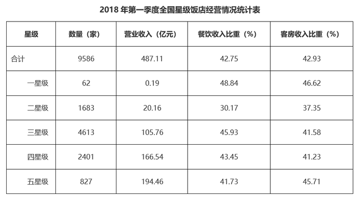
【选项】
A2017年第一季度，全国星级饭店营业收入超过480亿元
B2018年第一季度，五星级饭店数量占全国星级饭店的一成以上
C2018年第一季度，全国二星级饭店的客房收入比餐饮收入高2亿多元
D2018年第一季度，全国50个重点旅游城市平均每家星级饭店营业收入高于全国平均水平
听课笔记 / 决策路径：
【题目编号/题号】 ZL170 (264-20)书本第 263 264 265 页
【考点标签】 综合分析；综合资料
【材料】
其中，住宅 投资64352亿元，增长9.2%。 2014年，全国商品房销售面积120649万平方米，比上年下降7.6%，降幅比1—11月份收窄0.6个百分点， 2013年为增长17.3%；商品房销售额76292亿元，下降6.3%，降幅比1—11月份收窄1.5个百分点，2013年为增长 26.3%。 2014年，东部地区商品房销售面积54756万平方米，比上年下降13.7%，降幅比1—11月份收窄1.3个百分 点；销售额43607亿元，下降11.6%，降幅收窄2.1个百分点。中部地区商品房销售面积33824万平方米，下降 3.9%，降幅收窄0.4个百分点；销售额16558亿元，增长0.2%，1—11月份为下降0.9%。西部地区商品房销售面 积32068万平方米，增长0.6%，增速回落0.6个百分点；销售额16127亿元，增长3.5%，增速回落0.6个百分点。
【题干】
能够从上述资料中推出的是：
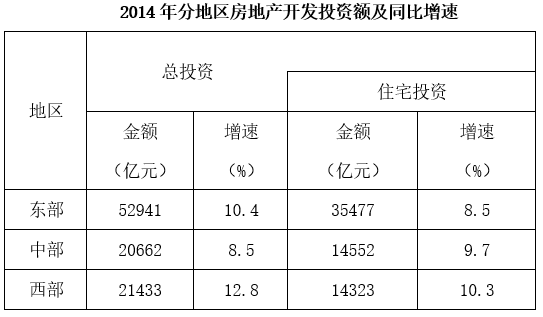
【选项】
A2013年东部地区的商品房销售额超过50000亿元
B2014年我国东部地区住宅投资额低于中、西部地区之和
C2014年我国东部地区房地产投资额是西部地区的3倍多
D2014年住宅投资占房地产开发投资的比重不到七成
听课笔记 / 决策路径：
【题目编号/题号】 ZL174 (266-5)书本第 265 266 页
【考点标签】 综合分析；综合资料
【材料】
2022年上半年，我国软件与信息技术服务业总收入同比增长10.9%，增速较1~5月份提高0.3个百分点。软件 与信息技术服务业收入中，软件产品收入、信息技术服务收入、信息安全收入、嵌入式系统软件收入同比分别 增长10.2%、12%、11.4%和5%。信息技术服务收入中，云计算、大数据服务收入4790亿元，同比增长9.3%；集 成电路设计收入1279亿元，同比增长15.2%。 2022年上半年，我国东部、中部、西部、东北地区完成软件与信息技术服务业总收入同比增速分别为 10.2%、14.4%、15.9%和6.3%。
【题干】

能够从上述资料中推出的是：
【选项】
A2021年上半年，我国东北地区软件与信息技术服务业月均收入不足150亿元
B2022年6月，我国软件与信息技术服务业总收入增速超过10%
C2022年上半年，我国嵌入式系统软件收入同比增量小于信息安全收入同比增量
D2022年上半年，我国集成电路设计收入占信息技术服务收入比重低于上年同期
听课笔记 / 决策路径：
【题目编号/题号】 ZL176 (268-10)书本第 266 267 268 页
【考点标签】 综合分析；综合资料
【材料】
2012~2021的10年间，辽宁、天津、河北、山东、江苏、上海、浙江、福建、广东、广西、海南11个沿海 省市的核电、火电、钢铁、石化等行业的海水冷却用水量稳步增长（图1），其中浙江、福建、广东3省海水冷 却用水量相对较高（表1）。截至2021年底，11个沿海省市共建有海水冷却工程22个，2021年全国11个沿海省 市海水冷却工程年总循环量为169.5亿吨。
【题干】
可以从上述资料推出的是：
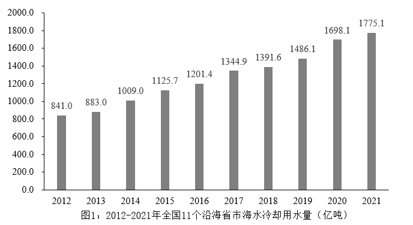
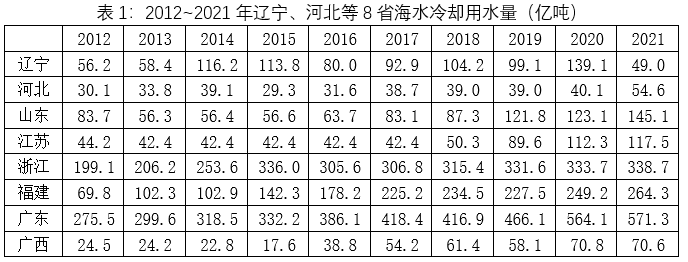
【选项】
A2021年全国11个沿海省份海水冷却用水量前4名依次为：广东、浙江、福建、江苏
B2012~2021年浙江、广东年海水冷却用水量之和均超过全国同期的60%
C2012~2021年表1的8个省市中福建的海水冷却用水量年平均增速最快
D2012~2021年间，广东的海水冷却用水量均为辽宁同期的3倍以上
听课笔记 / 决策路径：
【题目编号/题号】 ZL177 (269-15)书本第 268 269 页
【考点标签】 综合分析；综合资料
【材料】
2021年间，广东的海水冷却用水量均为辽宁同期的3倍以上 2017年1-4月，T地区批发和零售业商品销售总额为15220亿元，同比增长10.5%，其中，限额以上商品销售 额达到11107亿元，同比增长10%；4月份，T地区批发和零售业商品销售总额和限额以上商品销售额分别为3339 亿元和2554亿元。
【题干】
关于2017年T地区限额以上商品销售额，能够从资料中推出的是：
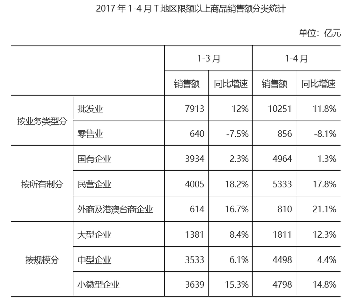
【选项】
A4月批发业及零售业销售额均低于一季度月均数值
B一季度，外商及港澳台商企业销售额同比增长100亿元以上
C一季度，小微型企业销售额同比增量超过大型企业和中型企业之和
D1-4月，限额以上商品销售额占批发和零售业商品销售总额的比重较上年同期有所提升
听课笔记 / 决策路径：
【题目编号/题号】 ZL183 (277-20)书本第 276 277 278 页
【考点标签】 综合分析；综合资料
【材料】
2019年全国房地产开发投资132194亿元，比上年增长9.9%，增速比上年加快0.4个百分点。其中，住宅投资 97071亿元，增长13.9%，增速比上年加快0.5个百分点。2019年，全国商品房销售面积171558万平方米，比上年 下降0.1%。其中，住宅销售面积增长1. 5%，办公楼销售面积下降14.7%，商业营业用房销售面积下降15.0%。 商品房销售额159725亿元，增长6. 5%，增速比上年回落5.7个百分点。其中，住宅销售额增长10.3%，办公楼销 售额下降15.1%，商业营业用房销售额下降16.5%。
【题干】
能够从上述资料中推出的是：
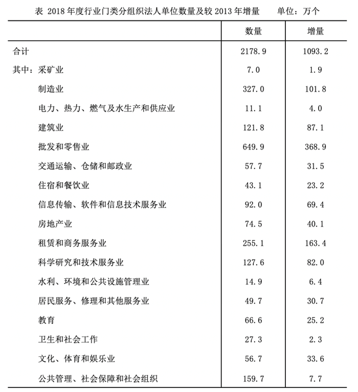
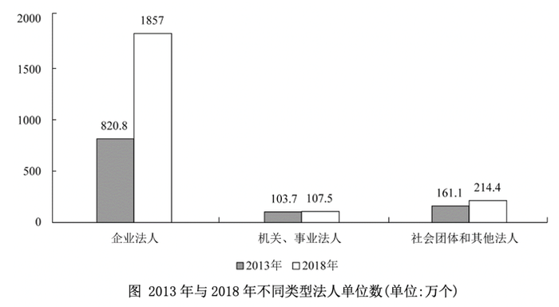
【选项】
A2013年，采矿业法人单位占全国法人单位的比重超过1%
B2013—2018年间，机关、事业法人单位年均增加不到1万个
C2013年，批发和零售业法人单位数量是教育法人单位数量的7倍以上
D2013—2018年间，科学研究和技术服务业是法人单位数年均增速最快的行业
听课笔记 / 决策路径：